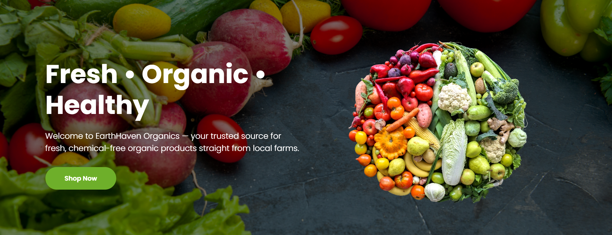
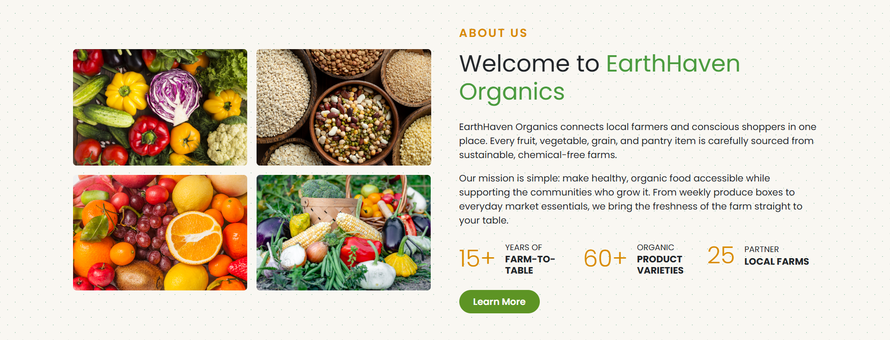
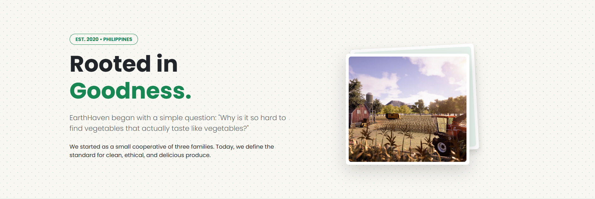

The Objective
"EarthHaven Organics is a high-fidelity frontend prototype built to demonstrate modern e-commerce user experiences. The goal was to create a responsive, component-based Single Page Application (SPA) that manages complex UI states—such as dynamic product filtering and interactive recipe menus—using Angular’s reactive architecture without the need for a traditional backend."
Frontend Architecture
Reactive Catalog
A dynamic product showcase featuring category-based filtering and Angular-driven state management for organic listings.
Modular Interface
A scalable, component-based layout utilizing Bootstrap 5 to ensure a fluid farm-to-table experience on mobile and desktop.
SPA Optimization
Single Page Application (SPA) routing with optimized image handling for instant navigation and minimal loading latency.
Structural Integrity
Unit-tested frontend logic using Jasmine and Karma to verify component stability and reliable UI rendering.